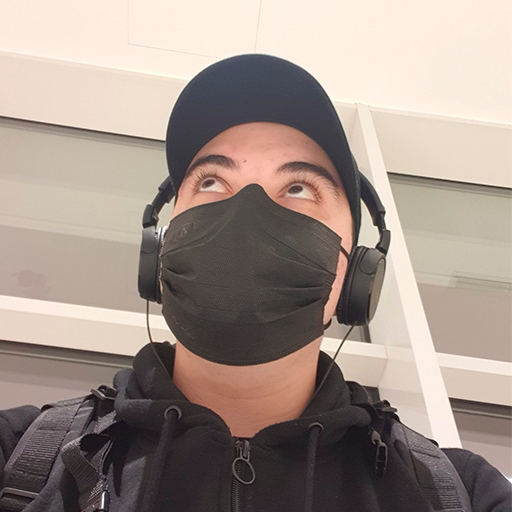

Success
Enable this ModPack successful
Are you sure you want to delete this modpack?
Are you sure you want to delete this mod?
Success
The mod pack has been created successfully.

See Info...
Documentation and important information
All the help information for both the application and minecraft in general, has been compiled by HellLonely, the creator of the app.
Info
Compressing the Mod Pack to zip may take some time.
Open .minecraft folder.
Open .minecraft mods folcer.
Open Minecraft logs folder.
Open Resourcepacks folder.
Open Shaderpacks folder.
Open Screenshots folder.
Open ModPack data.
Report a bug.